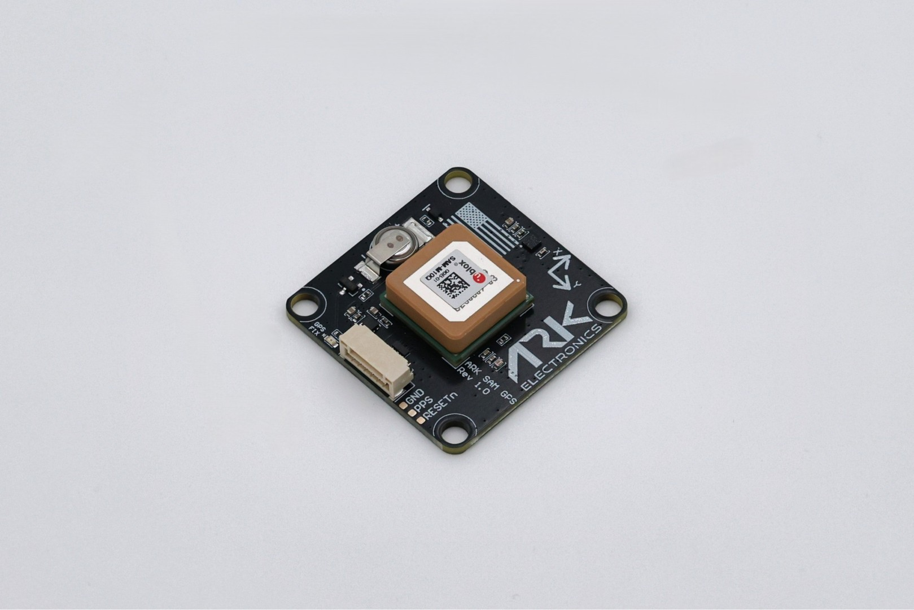
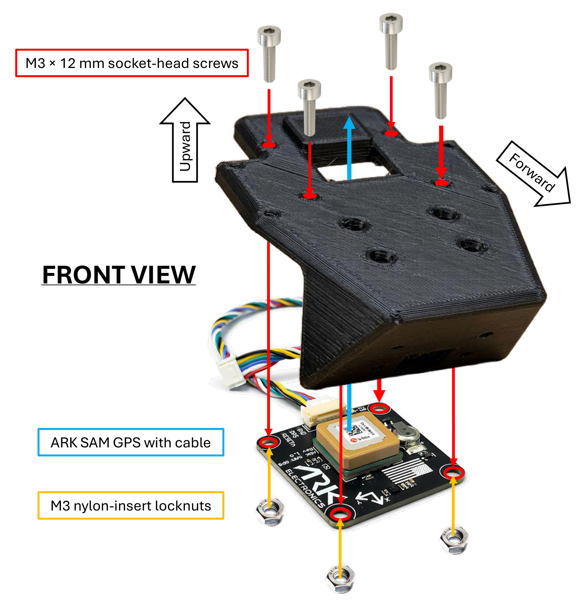

Task 2: Install GPS/Compass
Mount the GPS/compass module on the camera/GPS mount and connect the 6-wire cable.
Parts required
- ARK SAM GPS/compass module
- 6-wire GPS/compass cable
- Camera/GPS mount
- Camera module (hold for Task 3)
- Camera ribbon cable (hold for Task 3)
- Fastener kit
- GPS + Camera subkit
Tools required
- 2.5 mm Allen key
- 5.5 mm nut driver
Step 1. Prepare the GPS assembly
- Retrieve one ARK SAM GPS/compass set, the camera module, the camera ribbon cable, the camera/GPS mount, and the fastener kit.
- Each bubble-wrap package contains two GPS/compass sets. Take only one set for your team. Split the bubble-wrap package with another team. If you cannot find a partner set, ask an instructor.
- Connect either end of the 6-wire cable to the GPS/compass module. Leave the other end free for now.
- Open the fastener kit and remove the bag labeled GPS + Camera.
- Write your name and section on that bag. Maintain positive control of the rest of the fastener kit.
- Keep the camera module and ribbon cable with the mount for Task 3.
Shared bubble-wrap package.
Each bubble-wrap package contains two GPS/compass sets. Take only one set for your team. Split the bubble-wrap package with another team. If you cannot find a partner set, ask an instructor.
Each bubble-wrap package contains two GPS/compass sets. Take only one set for your team. Split the bubble-wrap package with another team. If you cannot find a partner set, ask an instructor.
Fastener control.
Only the GPS + Camera subkit is needed here.
Only the GPS + Camera subkit is needed here.

ARK SAM GPS/compass module.

Camera/GPS mount.
Step 2. Mount the GPS module
- Insert the four M3 × 12 mm socket-head screws in the directions shown in Fig. 2a.
- Seat the GPS/compass module in the square opening on top of the camera/GPS mount, oriented exactly as shown.
- Thread the four M3 nylon-insert lock nuts on by hand.
- Use the 2.5 mm Allen key on the screw heads and the 5.5 mm nut driver on the lock nuts. Tighten in a crisscross pattern.
- Snug the fasteners only until the module is secure. Do not overtighten.
End state.
The module sits flat in the mount and the 6-wire cable is already connected.
The module sits flat in the mount and the 6-wire cable is already connected.

Fig. 2a. Mounting the GPS/compass module.
Common errors
- Using hardware from the wrong fastener bag.
- Rotating the GPS module relative to Fig. 2a before tightening.
- Fully tightening one corner before all four nuts are started.
- Forgetting to connect the 6-wire cable before moving on.